PERHATIAN: Atas sebab kerahsiaan peribadi, laman ini diprogramkan untuk dilawati hanya sekali sahaja, dan 9 akses telah dibuka. Jika anda keluar sekarang, anda tidak akan dapat mengaksesnya lagi.
Anda dan 9 Wanita Lain Telah Layak. 990 wanita telah tidak layak.
Jika anda sampai sejauh ini, anggaplah diri anda wanita yang bertuah. Hanya 10 daripada 1000 wanita akan mendapat akses kepada kandungan kontroversi yang anda akan lihat di sini.
Sebab semua eksklusiviti ini? Mudah sahaja...
Jika laman ini menjadi awam, ia berkemungkinan besar akan menamatkan kebanyakan perkahwinan selebriti yang mungkin anda kenali.
Jadi di sini saya akan mendedahkan muslihat kotor wanita-wanita pekerja seks untuk mengekalkan lelaki paling kaya, berkuasa dan terkenal di Malaysia yang sanggup MEMBAYAR untuk seks, sementara isteri mereka meminta perhatian dan menjadi kecewa serta cemas di rumah.
Jadi, jika anda bijak, anda akan mencuri muslihat yang sama untuk digunakan pada suami anda, atau lelaki yang anda sayangi, dan memastikan dia tidak akan pernah mengkhianati anda, menjadi sepenuhnya setia dan terobsesi dengan anda juga.
Sama seperti yang berlaku dengan Maíra Cardi, seorang influencer Brazil yang cukup terkenal, yang membuat usahawan multimilionair Thiago Nigro berpisah daripada hubungan lebih 10 tahun.
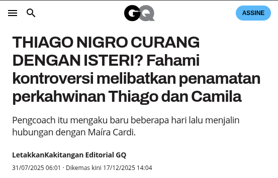
Dan pula, hanya 1 bulan kemudian, mengumumkan hubungan dengannya. Dan berkahwin pada tahun yang sama, dengan rejim perkongsian harta sepenuhnya, di mana secara automatik separuh daripada hartanya didaftarkan atas namanya.
(Thiago, 1 bulan selepas berpisah dengan Camila dan Mengumumkan hubungan dengan Maíra, wanita yang dia gunakan untuk mengkhianati bekas isterinya)
Namun, sekarang saya terpaksa memberitahu anda bahawa perkara akan mula menjadi lebih panas dan lebih kontroversi. Jadi bersiaplah untuk melihat perkara yang media tidak akan pernah dedahkan kepada anda.
Selamat berkenalan, nama saya Renata Maciel, dan saya adalah pekerja seks dan pendamping mewah profesional.


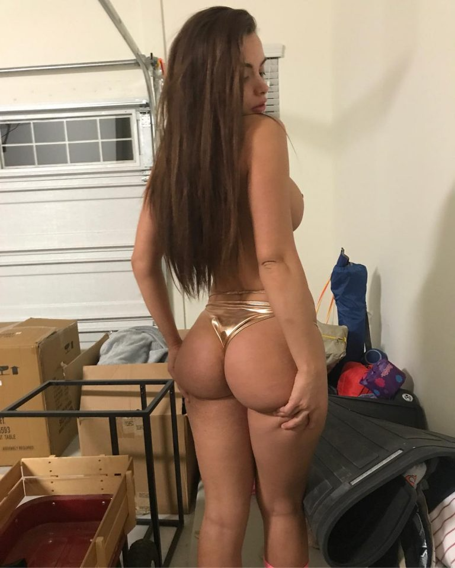
Maksudnya, saya adalah wanita yang ramai usahawan, artis dan atlet terkenal mengkhianati isteri mereka dengannya.
Dan sekarang saya akan mengajar anda muslihat paling kotor saya untuk mengekalkan bahkan lelaki kaya, terkenal dan berkuasa sepenuhnya setia kepada saya, mengkhianati isterinya, membawa saya makan di restoran mahal dan juga melancong secara sembunyi daripada isteri mereka.

(Di sini saya melawat Las Vegas, Ibu Kota Hiburan buat pertama kali, dengan perbelanjaan seorang Pembicara Motivasi yang sangat terkenal di Internet)

(Dan di sini saya melawat Amerika Syarikat buat kali kedua, di negeri California, sebelum pergi ke Disney, dibiayai oleh seorang Aktor dari RTM)
Dan tengok, biar saya ceritakan gosip yang sangat kotor sebelum anda pergi lebih jauh. Apa yang saya dedahkan di sini, saya tidak pernah komen secara terbuka. Ini saya tidak sepatutnya tunjukkan kepada anda.
Namun, selepas suami seorang rakan saya, penari dalam program auditorium yang sangat terkenal, cuba tempah masa dengan saya tanpa tahu siapa saya, saya memutuskan untuk buat halaman ini, yang hanya online 1 hari setiap 4 bulan, untuk mengajar 10 wanita bertuah muslihat utama yang digunakan oleh saya dan rakan-rakan sekerja saya.
Amaran: Mulai sekarang, kandungan menjadi sangat sulit. Ingat bahawa jika anda tutup halaman ini, anda tidak akan dapat melihatnya lagi.
Jadi, sebelum saya serahkan muslihat itu, biar saya buat ujian pantas dengan anda, hanya 3 soalan.
Angkat jari jika anda pernah memandang telefon bimbit, menunggu jawapan mesra daripadanya yang tidak pernah datang atau menunggu dia keluar dari telefon dan memberi perhatian kepada anda.
Angkat jari jika anda pernah tangkap dia menonton porno secara sembunyi, dan berpura-pura tidak melihat, menelan ketulan di kerongkong.
Angkat jari jika anda pernah bertanya pada diri sendiri, seorang diri di bilik mandi, jika badan wanita lain lebih baik daripada badan anda.
Jika anda mengangkat jari untuk sekurang-kurangnya satu daripadanya, kekal bersama saya, kerana apa yang saya akan tunjukkan sekarang dibuat khusus untuk wanita seperti anda.
JADI, APAKAH MUSLIHAT INI?
Muslihatnya adalah menguasai seni blowjob yang tidak dapat dilupakan.

Sama seperti Maíra sedang lakukan dalam video sulit yang dia hantar dalam kumpulan pendamping mewah kami, untuk menguasai minda dan hati Thiago semasa dia masih berkahwin.
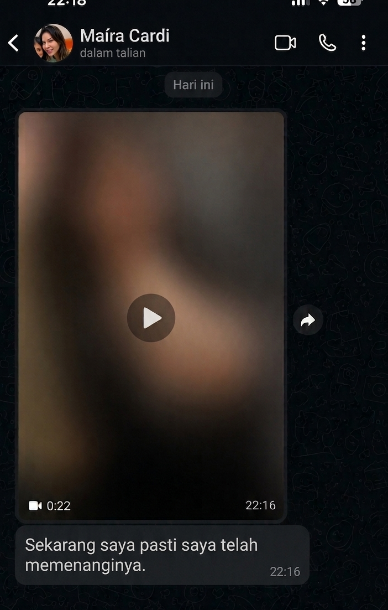
Dan sebelum anda fikir, apa yang istimewa dalam hal ini, saya selalu buat dia pancut?
Baiklah, memang begitu.
Saya tahu bahawa ini, bagi anda, mungkin kelihatan seperti tanda bahawa seks anda dengannya hebat. Lebih-lebih lagi kerana kami, wanita, selalu diajar bahawa jika dia pancut, sudah bagus.
Tetapi, sayang, malangnya tidak begitu.
Sama seperti kami kadang-kadang berpura-pura orgasme, lelaki juga boleh berpura-pura bahawa semuanya baik selepas pancut.
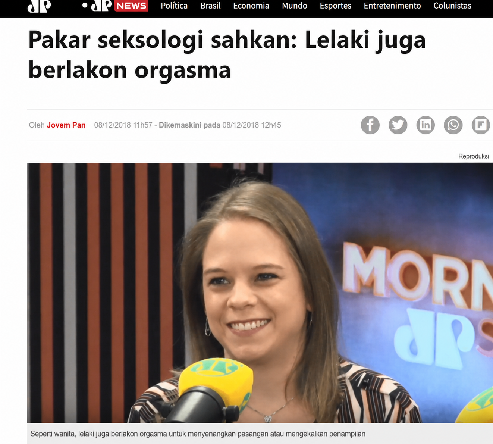
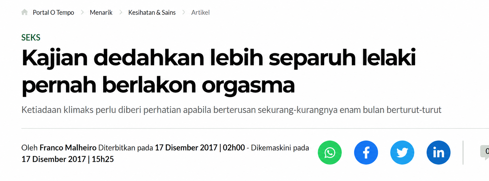
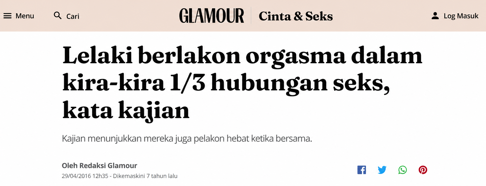
Dan sebelum anda fikir ini kerana kurangnya keberanian anda, biar saya tenangkan anda sekarang. Anda tidak melakukan apa-apa yang salah. Masalahnya bukan kehendak anda, bukan badan anda. Masalahnya adalah tiada siapa pernah mengajar anda teknik yang betul, dan itu akan saya betulkan sekarang.
Oleh itu, untuk blowjob yang tidak dapat dilupakan, yang membuat dia berhubung secara emosi dengan anda dan menjadikan anda keutamaan nombor satu dalam hidupnya, diperlukan lebih daripada sekadar membuat dia pancut. Ia perlu menggunakan apa yang saya dan rakan-rakan sekerja panggil EFEK MULUT VELVET.
Dan di sini adalah rahsia kotor di sebalik nama ini.
Perhatikan perkataan ini, velvet, kerana ia adalah kunci kepada segala yang saya akan ajar.
Sebuah faraj, dubur, badan, adalah saling boleh ditukar dalam otak lelaki. Dia tukar posisi, tukar wanita, dan bagi otak reproduktifnya, semuanya pada asasnya sensasi fizikal yang sama, hanya dibalut dalam badan yang berbeza.
Tetapi mulut tidak.
Mulut mempunyai irama, tekanan, suhu, air liur, pandangan, pernafasan dan cara anda menelan pada akhirnya. Dan kombinasi khusus ini, dilakukan dengan cara anda, menjadi sejenis cap jari seksual dalam ingatannya.
Itulah sebabnya seorang lelaki lupa dengan posisi mana yang dia lakukan minggu lepas, tetapi tidak pernah lupa blowjob yang benar-benar meninggalkan kesan padanya.
Dan tepat cap ini, EFEK MULUT VELVET ini, yang membuat dia menghapuskan keinginan untuk mencari keseronokan dengan mana-mana wanita lain, kerana di dasar otaknya, tiada siapa lagi boleh menghasilkan semula itu dengan cara yang sama.
Dalam kumpulan WhatsApp kami sendiri, wanita yang mempunyai ego terlalu besar untuk belajar cap dagangan ini dengan kami, akhirnya menjadi bahan jenaka!
Seorang daripada mereka, sebagai contoh, adalah Luísa Sonza, seorang penyanyi dan influencer yang sangat terkenal di Brazil, yang melihat teman lelakinya disedut oleh orang lain di tandas sebuah bar, kerana tidak pernah mahu belajar.
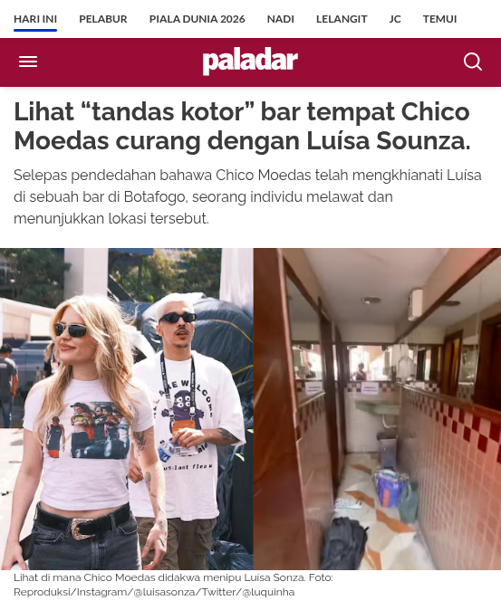
Tetapi yang paling teruk, adalah Bruna Biancardi, bekas teman wanita dan sekarang, isteri semasa Neymar. Kami bertegas supaya dia belajar dengan kami, kerana kami tahu seks akan terganggu, dan hanya EFEK MULUT VELVET boleh menyelamatkan hubungannya. Tetapi ego kecilnya bercakap lebih kuat kali pertama, sama seperti keinginan Neymar untuk disedut dengan betul juga…
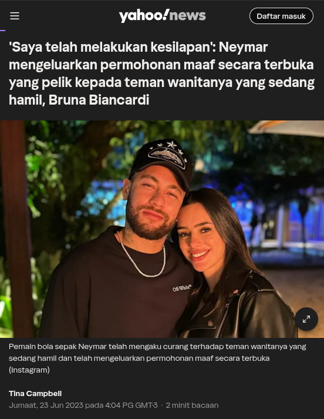
Dan hasilnya semua orang tahu, dia mengaku secara terbuka bahawa dia mengkhianatinya walaupun dia hamil.
Ini hanyalah dua contoh daripada beribu-ribu yang berlaku dalam dunia selebriti. Saya sudah digunakan untuk mengkhianati setiap selebriti wanita yang anda tidak bayangkan.
Tetapi saya mahu anda bayangkan hanya untuk satu minit.
Jika ini berlaku kepada lelaki yang boleh memilih wanita yang mereka mahu untuk berkahwin, kerana mereka mempunyai wang, kemasyhuran dan kuasa.
Bayangkan sahaja bilangan lelaki biasa yang mengkhianati isteri mereka apabila ada peluang.
Data sendiri menunjukkan bahawa 91% lelaki sudah tidak setia dan mengkhianati wanita mereka, dan mereka sendiri mengatakan itu dengan terus terang.
Dan saya rasa jika anda bertanya kepada mana-mana wanita ini sebelum pengkhianatan, "anda rasa dia akan mengkhianati anda", dia juga akan jawab, tidak pernah.
Hanya sahaja tepat perkara yang kita fikir mereka tidak akan pernah lakukan, yang mereka lakukan.
Jadi, tepat untuk mengelakkan ini berlaku kepada anda, yang merupakan salah seorang daripada 10 orang bertuah di laman ini hari ini, saya memutuskan untuk mengumpulkan semua pendamping mewah teratas kami di Malaysia bagi menulis panduan yang sangat praktikal tentang teknik dan muslihat kotor kami untuk Blowjob yang Tidak Dapat Dilupakan..
Sehingga membuat seorang lelaki sepenuhnya setia dan jatuh cinta dengan anda, melihat kebahagiaan anda dan kesatuan keluarga anda berdua sebagai keutamaan nombor satu dalam hidupnya.
Dan kami memutuskan untuk gelar panduan ini sebagai.
Manual Kesetiaan.
Di dalamnya anda akan tahu dengan tepat apa yang saya lakukan untuk membuat lelaki seperti ini mengkhianati isteri mereka dan menjadi sepenuhnya jatuh cinta dan setia kepada saya, membawa saya dengan mereka ke pelbagai tempat di dunia.
Dalam rakaman di mana wajah mereka tidak muncul, kerana kerahsiaan, sudah tentu, anda boleh lihat sedikit teknik rahsia dan paling kotor yang anda akan terima.
Di sini saya bersama seorang pemain bola sepak Malaysia yang bermain dalam pasukan gergasi Eropah, sementara isterinya menjaga dua anak kecil di rumah.

Dan di dalamnya saya gunakan Lidah Licin, yang membuat dia merasai mulut anda yang lembut, halus dan tanpa geseran langsung, membawa dia meletup dengan keseronokan. Anda akan jumpainya di bab 4 Manual.
Sudah pada hari ini, saya sedang menyedut seorang pembentang TV yang sangat terkenal, yang baru sahaja bergaduh teruk dengan isterinya dan memanggil saya dengan segera untuk melegakan tekanan dan bercakap buruk tentangnya di belakang.
Kerana dia sudah bosan dengannya, saya terus ke Titik G Lelaki untuk membuat dia pancut dengan cepat dan melegakan tekanan sekali gus. Pada hari itu, selepas pancutan pertama, kami berhubungan seks sepanjang malam, sementara dia memberi alasan bahawa dia sedang membantu rakan-rakan.
Anda akan jumpai segala-galanya tentang Titik G Lelaki di bab 2 Manual.

Sementara di sini saya sangat bersemangat untuk bertemu seorang penyanyi Irama Melayu yang sangat terkenal, yang penat dengan kerja dan rutin persembahan, dan akan membawa saya ke Eropah dengan alasan urusan keluarga bersama isterinya.

Teknik yang saya mula gunakan pada masa ini, saya panggil Cap pada Gigitan Pertama, dan ia akan dijelaskan bab demi bab, dalam modul Segala Yang Anda Perlu Tahu Untuk Memulakan Blowjob yang Tidak Dapat Dilupakan.
Di sini, saya sedang menerapkan Teknik Orgastik Testikular bersama seorang rakan sekerja lagi, pada pemilik podcast yang sangat terkenal, dengan jutaan tontonan di YouTube.
Ini merangsang dia untuk mengeluarkan air mani lebih banyak, dan jika anda agak rakus seperti saya, saya jamin anda akan suka.
Teknik Orgastik Testikular ini diajar di bab 7 Manual.
Akhir sekali, di sini saya, bersama kekasih pilihan (kawan isteri) seorang pemain bola sepak juara berganda, dan dia sedang membantu saya menerapkan Tenggorokan Dalam yang membuat dia gila untuk terima.
Yang paling lucu adalah 20 minit yang lalu dia baru sahaja terima blowjob daripada isterinya, tetapi ia begitu buruk sehingga dia memberi alasan mesyuarat kecemasan dan datang berlari untuk bahagia dengan kami.
Dan jangan risau, walaupun ia teknik lanjutan, anda akan belajar semua rahsia kami tentangnya dalam modul Teknik Lanjutan Manual.
Jadi, beritahu saya satu perkara kecil.
Adakah anda menyedari kuasa yang EFEK MULUT VELVET akan berikan kepada anda di tangan?
Sekarang biar saya ceritakan bagaimana manual ini lahir, kerana ini juga sebahagian daripada rahsia kotor.
Selepas suami rakan penari saya cuba cari saya tanpa tahu siapa saya, saya menjadi terganggu. Jika berlaku kepadanya, boleh berlaku kepada mana-mana wanita yang saya kenal.
Jadi saya panggil 14 rakan sekerja lain dari bandar-bandar yang berbeza di Malaysia, dan meminta setiap seorang menulis, tanpa penapis, dengan tepat apa yang mereka lakukan untuk menjadikan seorang lelaki tunduk.
Dalam 6 minggu, kami kumpulkan lebih 12 ribu mesej suara dan teks yang ditukar antara kami, membandingkan teknik demi teknik, menyesuaikan apa yang berfungsi dan membuang apa yang tidak berfungsi sebenarnya.
Kami ada 3 malam penuh hanya untuk menyusun ini dalam bab, kerana setiap seorang daripada kami mempunyai cara yang berbeza untuk menerangkan perkara yang sama, dan kami mahu mana-mana wanita, walaupun tanpa pengalaman langsung, boleh terapkan tanpa teragak-agak.
Dan begitulah Manual Kesetiaan lahir, dengan 8 bab, dari asas, iaitu EFEK MULUT VELVET, sehingga Teknik Lanjutan, yang biasanya kami hanya ajar kepada rakan sekerja lain, tidak pernah kepada wanita luar.
Sekarang, yang terbaik, adalah kerana kami tidak ada niat langsung untuk mendapat keuntungan daripadanya, dan hanya mahu mulakan tahun dengan memberikan hadiah kecil kepada 10 bertuah,
mendedahkan tanpa segan silu bagaimana lelaki sebenarnya dan apa yang membuat mereka setia sebenar atau mengkhianati dengan terus terang.
Daripada caj RM250, RM500 atau sehingga RM1.000, yang kami boleh dapat dengan mengambil telefon dan menelefon beberapa usahawan atau aktor terkenal, kami hanya akan minta wang untuk bayar pengaturcara yang mengekalkan laman ini online, sehingga anda 10 beli Manual.
Kerana pengaturcara caj RM390 untuk mengekalkan laman ini online sehingga 10 pembelian, anda hanya perlu melabur RM39,90 untuk mendapat akses kepada rahsia dan teknik paling kotor Manual Kesetiaan sepenuhnya, sekarang juga.
Hanya klik butang di bawah, masukkan data pembayaran anda (kad atau Touch 'n Go/GrabPay), dan buat bayaran.
Wang akan masuk terus ke akaun pengaturcara, jadi kami tidak akan tahu nama anda. Dan dalam bil kad juga hanya akan muncul huruf seperti MDL, tiada kaitan dengan kandungan yang anda akan terima.
Sekarang, jika anda masih bertanya bagaimana EFEK MULUT VELVET berfungsi dalam praktik dalam hubungan anda sendiri, biar saya jelaskan.
Tahu pada permulaan hubungan anda, di mana segala-galanya indah dan dia balas serta-merta, membawa anda keluar, bercakap tentang anda di hadapan rakan-rakan dan melakukan seks yang sengit dan penuh nafsu dengan anda?
Ini berlaku kerana, dalam kepalanya, segala-galanya baru. Setiap hubungan seksual yang dia ada dengan anda adalah kebaharuan untuk otaknya.
Dan oleh itu, hormon seperti dopamin, yang memotivasinya untuk berhubungan seks dengan anda, dan oksitosin, yang membuat dia mencipta ikatan dan cinta kepada anda, berada pada tahap paling tinggi.
Namun, sepanjang masa, hubungan anda mungkin jatuh sedikit ke rutin.
Ini adalah apa yang pelanggan saya paling adukan. Monotoni yang merupakan kehidupan mereka dengan isteri. Bahawa segala-galanya selalu sama.
Dan tepat di situlah keindahan EFEK MULUT VELVET masuk.
Kerana berbeza dengan seks biasa, yang menjadi sejuk kerana diulang, mulut yang terlatih dengan teknik baru boleh mencipta semula sensasi kali pertama, berkali-kali, tanpa pernah menjadi rutin, semata-mata kerana setiap butiran, irama, tekanan dan pandangan, boleh disesuaikan dan dicipta semula oleh anda.
Dan selepas lebih 5.000 lelaki berkahwin yang sudah melalui tangan saya, saya boleh sahkan satu perkara kepada anda.
Bukan badan yang meletihkan lelaki. Ia adalah kekurangan teknik yang menjadi rutin.
Ini kerana, seperti yang anda sudah tahu, perkara yang paling disukai lelaki adalah seks. Namun, berita besar di sini adalah bahawa, bagi mereka, SEKS FARAJ DAN DUBUR, SELALU PERKARA YANG SAMA!
Apabila seorang lelaki melihat wanita berbeza dalam posisi empat, sisi, menunggang atau bahkan melakukan seks dubur, baginya semuanya perkara yang sama.


Otak tidak rasional dan reproduktifnya fikir, punggung sedap, dan zakarnya serta-merta menjadi keras dan sedia untuk dia masukkan dan pancut.
Lelaki hampir selalu menjadi keras apabila melihat wanita telanjang.
Sebenarnya, banyak kali hanya saya tanggalkan baju, berada dalam posisi empat, biarkan mereka masukkan dan tidak buat apa-apa lagi, walaupun begitu mereka selalu pancut.
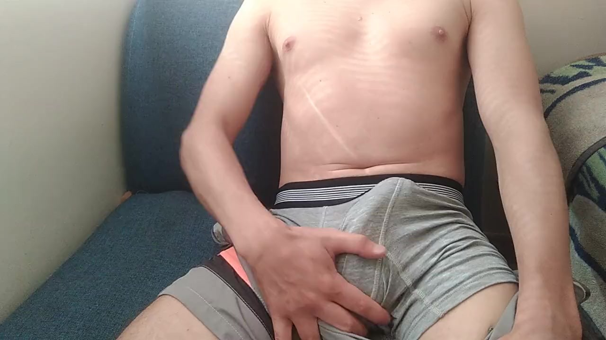

Perhatikan bagaimana saya hanya tidak perlu buat apa-apa di sini, dan mereka pancut.
Maksudnya, jika ada wanita lain di tempat saya, AKAN PERKARA YANG SAMA, dan hampir tiada perbezaan langsung.
Sekarang, jika saya perlu seorang lelaki menjadi ketagih dan setia kepada saya, memuji saya setiap masa, menjemput makan di restoran hebat dan membawa saya melancong ke luar negara, satu-satunya perkara yang saya perlu lakukan adalah mengaktifkan EFEK MULUT VELVET.
Dan di sini adalah sebabnya.
Blowjob adalah lebih daripada sekadar pergerakan penetrasi mudah, di mana zakar masuk dan keluar dari lubang, seperti dalam seks dubur atau faraj.

Di dalamnya, bibir, lidah, air liur dan tekak masuk ke dalam tindakan. Belum lagi postur anda, cara anda memandang dan senyum kepadanya. Dan bahkan apa yang anda lakukan apabila dia pancut, yang adalah pencetus yang kami panggil Cap Pancutan, dan yang menyegel ingatan ini dalam kepalanya dengan cara yang tiada wanita lain boleh salin.
Faktor-faktor ini, yang bergantung hanya pada anda, memberi anda keupayaan untuk menyediakan pengalaman baru dan unik kepadanya, satu demi satu.
Membuat anda mempunyai keupayaan untuk mengambil kawalan penuh terhadap apa yang anda mahu dia rasa atau tidak.
Dan itulah sebabnya Manual Kesetiaan, di mana anda menguasai EFEK MULUT VELVET, adalah kunci untuk mengekalkan keluarga anda dengannya bersatu dan bahagia sehingga akhir.
Sama seperti yang berlaku dengan Maíra dan Thiago.

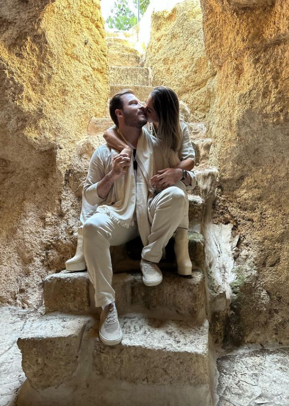
Dan sama seperti yang berlaku dengan wanita yang sangat sedikit yang sudah mendapat akses kepada kandungan Manual, dan melaporkan bahawa suami atau teman lelaki.
1. Tidak menolak seks lagi, dan melakukannya dengan lebih banyak nafsu dan keamatan, memberi ciuman penuh cinta dan membawa dia ke orgasme yang dia tidak pernah alami sebelum ini.
2. Mula balas mesejnya serta-merta dan tanpa kasar, malah lebih mesra daripada biasa.
3. Mula menolak jemputan untuk keluar dan minum dengan rakan-rakan, menjadikannya keutamaan nombor satu dalam hidupnya.
4. Mula kelihatan seperti sama pada permulaan hubungan, menunjukkan lebih kebimbangan, memberi lebih perhatian, mendedikasikan lebih masa kepadanya dan malah merancang percutian..
Oleh itu, jika anda juga mahu memanfaatkan peluang ini untuk hidup perkara yang sama, dan melihat semua rakan wanita anda iri hati dengan pasangan yang anda dan suami anda jadi, hanya sekarang, sebelum anda tutup halaman ini dan tidak dapat melihatnya lagi, anda boleh menjadi salah seorang daripada 10 wanita di Malaysia yang akan menerima hadiah kecil permulaan tahun ini hanya dengan RM39,90.
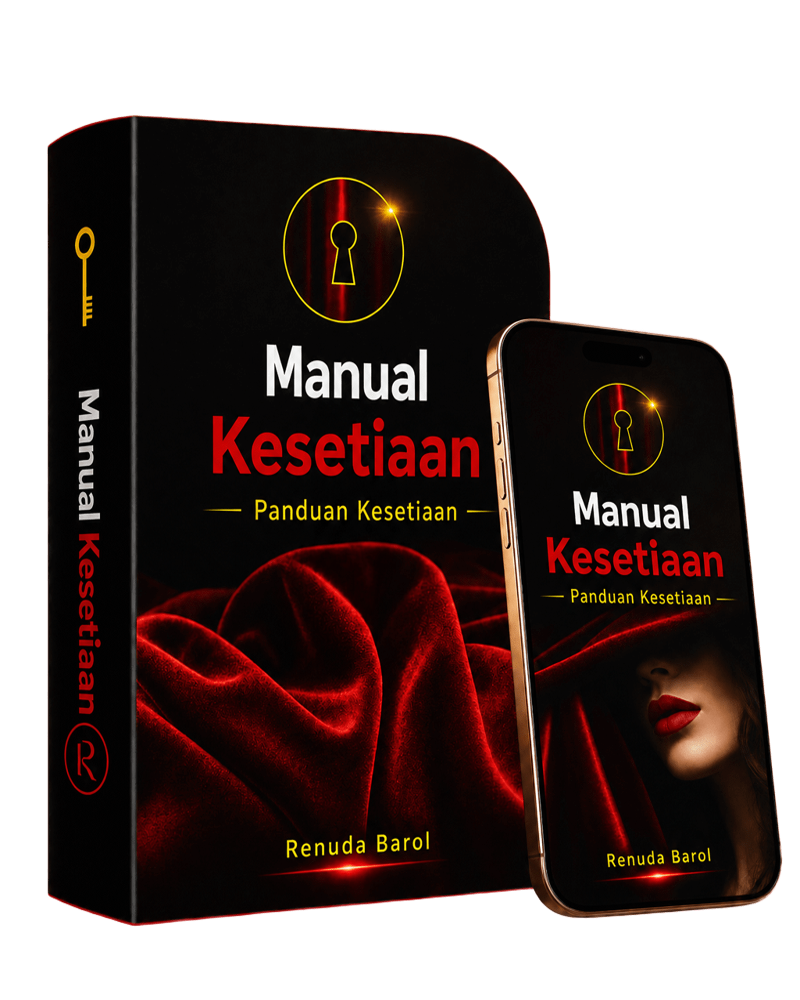
Baiklah, jika anda masih belum memutuskan kerana fikiran bodoh dan membataskan, saya tidak boleh tinggalkan tanpa komen satu perkara kecil lagi dengan anda.
Kerana jika anda masih mempunyai ketidakselesaan yang sangat biasa walaupun pada kami wanita, jenis, ah, tetapi saya gemuk dan hodoh, oleh itu suami saya tidak mahu berhubungan seks dengan saya, biar saya buat soalan mudah kepada anda.
Adakah anda rasa normal seorang lelaki menolak seks?
Satu-satunya sebab dia menolak seks adalah kerana dia tidak menyukainya.
Kerana, pada dasarnya, apabila mereka suka, mereka bahkan bayar mahal untuk dapat sensasi itu lagi, seperti yang berlaku dengan saya dan rakan-rakan sekerja saya.
Anda sendiri boleh ingat pasangan yang anda kenal, di mana lelaki jauh lebih handsome daripada wanita, tetapi walaupun begitu berada di sisinya setia dan membina keluarga.
Sebabnya? Sekarang anda sudah tahu.
Blowjob yang baik jauh lebih penting daripada penampilan yang baik.
Akhirnya, setiap lelaki tahu bahawa penampilan boleh diperbaiki dengan salon kecantikan, prosedur estetik dan gimnasium. Sudah seorang wanita yang menguasai EFEK MULUT VELVET adalah sesuatu yang jarang, unik, dan yang menggerakkan fikiran paling impulsifnya.
Tetapi tahu yang terbaik? Lelaki juga suka wanita yang lebih montel, saya bercakap serius.
"Ahh Tetapi Saya Gemuk dan Hodoh, Oleh Itu Suami Saya Tidak Mahu Berhubungan Seks Dengan Saya!"
Malah dalam video porno yang mereka tonton, ada pelakon plus size sebenar, dengan badan jauh daripada piawaian kurus majalah, dengan jutaan tontonan.

Semua mereka dianggap "gemuk dan kurang menarik" untuk kebanyakan wanita…
Tetapi jika lelaki tidak suka melihat mereka menyedut zakar, adakah anda rasa mereka akan mempunyai reputasi dan tontonan sebanyak itu?
Ini adalah bukti bahawa, sebenarnya, apa yang berlaku semasa seks jauh lebih penting daripada dengan siapa dia melakukan seks.
Jadi, untuk anda yang lebih montel dan ada masalah dengan itu, jangan risau. Pada dasarnya, dia hanya mahu merasai cap anda.
Sekarang, akhir sekali, saya hanya ada satu perkara kecil yang sangat penting untuk beri amaran. Dan yang sangat merugikan wanita yang cuba menguasai seni ini.
Filem porno.
Tolong, demi kebaikan anda, jangan tutup halaman ini sambil fikir anda boleh pergi tengok filem-filem itu dan belajar menyedutnya sendiri.
Saya hanya tunjukkan mereka di sini untuk buktikan bahawa, jika lelaki menonton, adalah kerana mereka mimpi dapat blowjob yang baik, tidak kira dari siapa. Ini adalah kunci untuk membuat lelaki setia.
Hanya sahaja filem keseluruhan direka untuk visual yang seksi, dan aktor yang ada di sana tidak dibayar untuk rasa keseronokan, tetapi untuk kekal keras, supaya pengarah boleh buat potongan dan teroka sudut terbaik.
Maksudnya, itu bukan kehidupan sebenar, dan banyak posisi yang anda lihat di sana sangat tidak selesa, dan aktor perlu bersungguh-sungguh untuk berpura-pura keseronokan.
Percayalah, saya menyedut zakar pelbagai bentuk dan saiz setiap hari, dan tahu apa yang saya cakapkan.
Sekarang, juga bukan pembohongan bahawa suami atau teman lelaki anda mencari di tempat lain apa yang dia tidak ada di rumah dengan anda.
Dan tahu langkah seterusnya? Baiklah, malangnya saya perlu jujur di sini.
Adakah dia menghantar mesej seperti ini kepada saya, atau kepada salah seorang daripada beribu-ribu rakan sekerja saya di seluruh Malaysia, meminta untuk menempah masa.
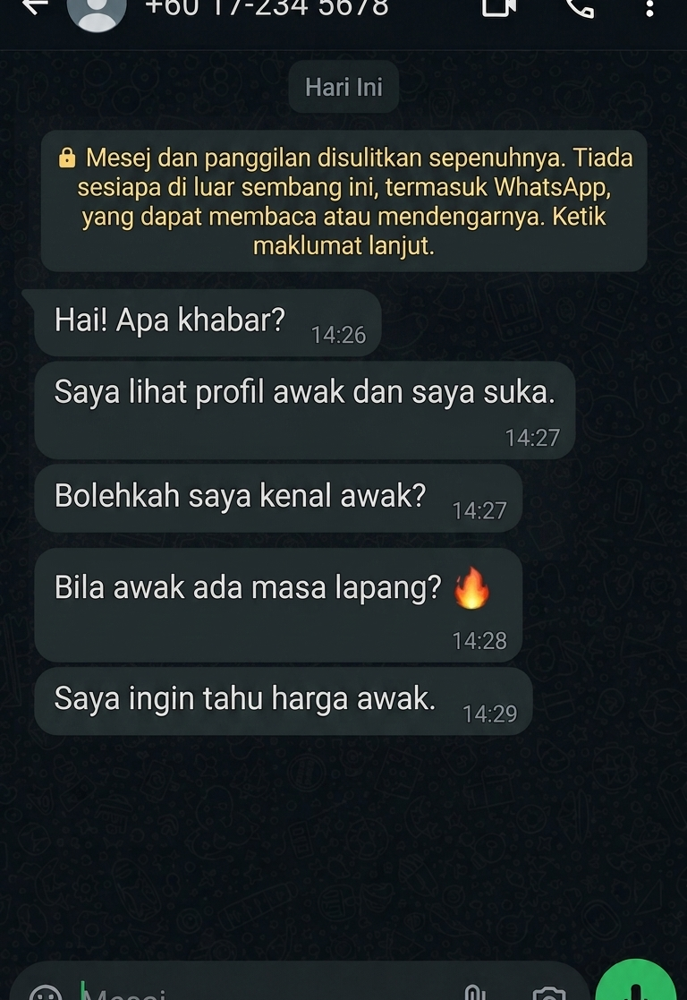
Bayangkan melihat lelaki yang anda sangat sayangi melakukan ini, sementara anda bersungguh-sungguh memberi cinta, kasih sayang dan perhatian kepadanya?
Ini adalah sensasi yang tiada wanita yang benar-benar sayangkan suaminya dan mahu keluarga bersatu dan setia patut alami.
Dan oleh itu, untuk anda pastikan ini tidak pernah berlaku kepada anda, hanya manfaatkan peluang unik dan menjadi salah seorang daripada 10 wanita terpilih pada permulaan tahun ini untuk mendapat akses ke Manual Kesetiaan, dan dengan itu mengaktifkan EFEK MULUT VELVET, hanya dengan.
RM39.90.